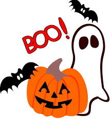
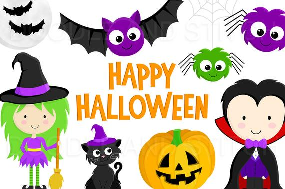

Halloween is considered a powerful turning point in the wheel of the year, signifying the cycle of life, death and rebirth.Halloween is the time when people release and let go of negative and lower energies that hold them back and celebrate the new energy that will eventually take its place. It is very important because, at this time people go to a Halloween party where alcohol is served, watch a scary movie or maybe attend a haunted house or some other place where the fear energies are being generated.
For those who want to experience the spiritual effects of Halloween, just take some time to cleanse your energy with light and feeling of love. Some people take a salt bath or do cleansing meditation to keep their energy clear and protected. Even nature models this act for us, when the trees shed and let go of their old leaves.
Tap into the energy of the cycle of life to give tribute those in the afterlife, by lighting a candle, serving out their favourite food or simply saying a prayer or blessing. And gain insight from them. Seek signs from your deceased loved ones to sort the issues in your existing daily life or simply tune your natural psychic abilities to strengthen your intuition and connect to your divine guides and angels.
People associate Halloween with fear. But it is not a festival of fear, rather it is an opportunity to welcome the unknown, release negativity, and bring a little extra intuition into everyday life.

